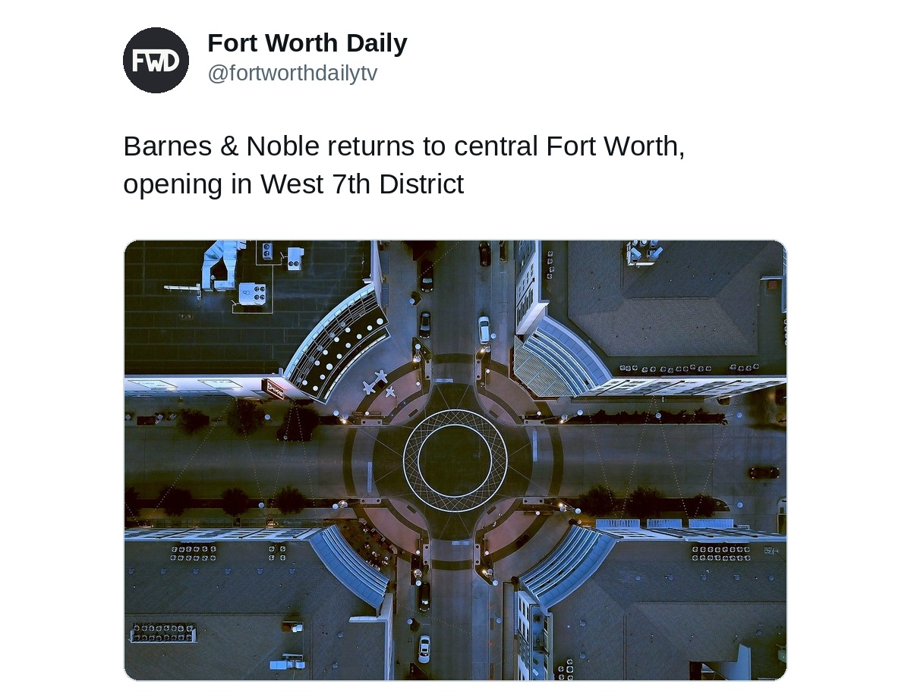
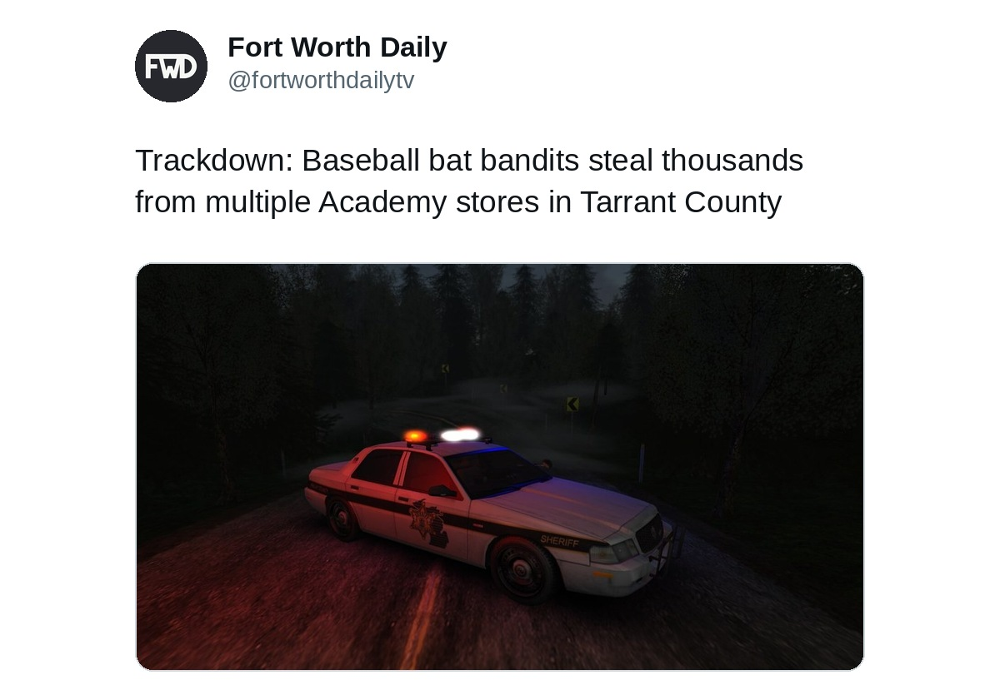
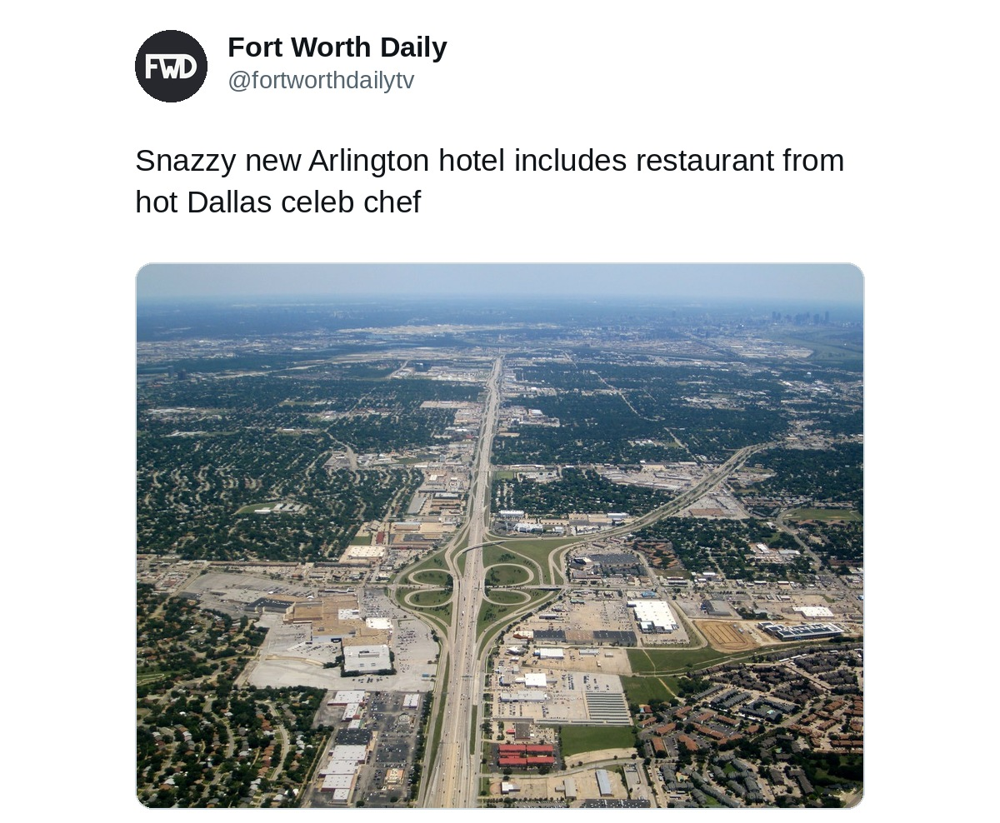
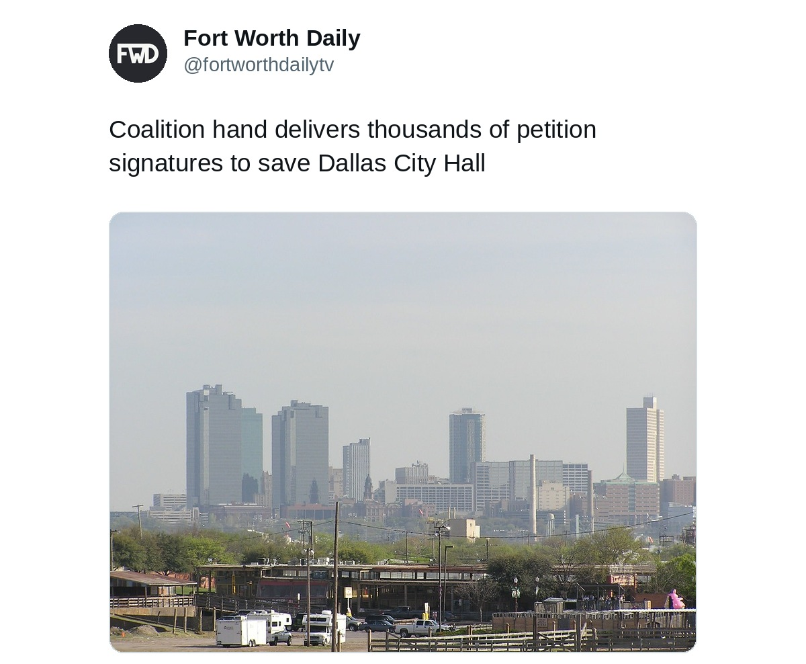
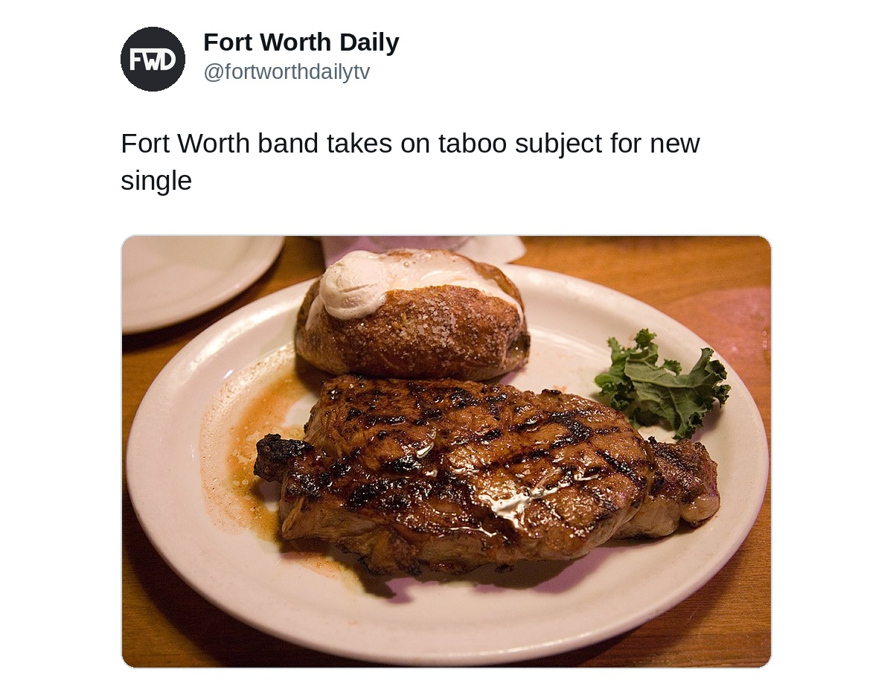
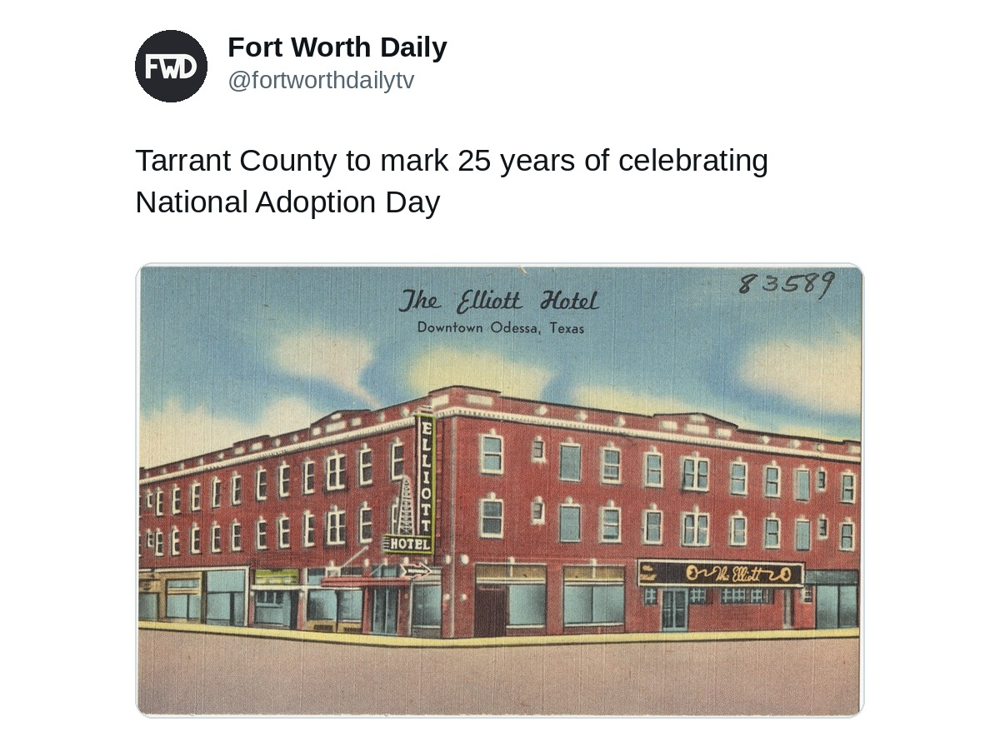

Barnes & Noble returns to central Fort Worth, opening in West 7th District. Booksellers said the demand for physical bookstores remains strong, while the retailer plans more openings in Texas.
Enjoy reading the news again. Barnes & Noble held a ribbon-cutting ceremony Wednesday for a new bookstore at Montgomery Plaza on Carroll Street in the West 7th District.

👍 ❤️ 😮 ✅ written to disk (dry run)
story + scoring
{
"source": "Fort Worth Report",
"kind": "rss",
"score": 1.2809,
"relevance": 4,
"url": "https://fortworthreport.org/2026/11/18/barnes-noble-returns-to-central-fort-worth-opening-in-west-7th-district/",
"image_license": "openverse-cc",
"image_credit": "Photo: Jonathan Silverberg (CC BY 2.0) via Flickr"
}Fort Worth police are looking for Joshua Rodriguez, wanted for aggravated robbery. Crime Stoppers is offering up to $2,000 for information leading to an arrest.
Call 817-469-TIPS (8477) or submit a tip at 469tips.com. You stay anonymous.

👍 ❤️ 😮 ✅ written to disk (dry run)
story + scoring
{
"source": "Fort Worth Police Department",
"kind": "wanted",
"score": 0.9295,
"relevance": 1,
"url": "https://police.fortworthtexas.gov/Crime-Public-Info/most-wanted",
"image_license": "official",
"image_credit": "Photo: Fort Worth Police Department"
}Trackdown: Baseball bat bandits steal thousands from multiple Academy stores in Tarrant County. Stealing bases during a baseball game is legal, but stealing baseball bats from local Academy stores certainly isn't. Fort Worth Police are asking the public to help them catch two bat bandits.

👍 ❤️ 😮 ✅ written to disk (dry run)
story + scoring
{
"source": "FOX 4 Dallas-Fort Worth",
"kind": "rss",
"score": 0.8868,
"relevance": 3,
"url": "https://www.fox4news.com/news/trackdown-baseball-bat-bandits-academy-fort-worth",
"image_license": "openverse-cc",
"image_credit": "Photo: ▓▒░ TORLEY ░▒▓ (CC BY-SA 2.0) via Flickr"
}Notes and News. Pick something out of this list!
Golden-voiced singer-songwriter Kelvin Thomas is launching a new monthly residency on Wed, Nov 18.
👍 ❤️ 😮 ✅ written to disk (dry run)
story + scoring
{
"source": "Fort Worth Weekly",
"kind": "rss",
"score": 0.6715,
"relevance": 1,
"url": "https://www.fwweekly.com/2026/11/18/notes-and-news-7/",
"image_license": "openverse-cc",
"image_credit": "Photo: JoshBerglund19 (CC BY 2.0) via Flickr"
}Snazzy new Arlington hotel includes restaurant from hot Dallas celeb chef. It's goodbye, Crowne Plaza and hello, Arlin, a colorful new hotel with a celebrity chef-run restaurant debuting in Arlington.
The murals in the atrium of The Arlin hotel in Arlington. Officially called The Arlin, a Tribute Portfolio Hotel , the hotel at 2700 E. Lamar Blvd. is now welcoming guests, following a makeover of the former Crowne Plaza hotel's guest rooms, lobby, and atrium.

👍 ❤️ 😮 ✅ written to disk (dry run)
story + scoring
{
"source": "CultureMap Fort Worth",
"kind": "rss",
"score": 0.6518,
"relevance": 2,
"url": "https://fortworth.culturemap.com/news/travel/arlin-hotel-arlington-kent-rathbun/",
"image_license": "openverse-cc",
"image_credit": "Photo: La Citta Vita (CC BY-SA 2.0) via Flickr"
}Coalition hand delivers thousands of petition signatures to save Dallas City Hall. A petition with over 34,500 signatures seeks to preserve Dallas' iconic I.M.
Pei-designed City Hall, allowing residents a potential vote on its future.

👍 ❤️ 😮 ✅ written to disk (dry run)
story + scoring
{
"source": "WFAA",
"kind": "rss",
"score": 0.5669,
"relevance": 2,
"url": "https://www.wfaa.com/article/news/local/dallas-county/coalition-hand-delivers-thousands-of-petition-signatures-to-save-dallas-city-hall/287-5491ae14-66d1-437f-b230-15117a8e5536",
"image_license": "openverse-cc",
"image_credit": "Photo: dph1110 (CC BY 2.0) via Flickr"
}A Fort Worth shelter pet finds her home in paradise. A shelter pet is enjoying at her beautiful home in Crowley.
Most days, Breezy can be found lounging by the backyard pool alongside her three canine siblings.
👍 ❤️ 😮 ✅ written to disk (dry run)
story + scoring
{
"source": "City of Fort Worth",
"kind": "rss",
"score": 0.5602,
"relevance": 3,
"url": "https://www.fortworthtexas.gov/news/2026/11/A-Fort-Worth-shelter-pet-finds-her-home-in-paradise",
"image_license": "official",
"image_credit": "Photo: City of Fort Worth"
}‘This will affect me greatly’: Transit users question rideshare cuts across Fort Worth. Trinity Metro’s board of directors approved cuts to the agency’s On-Demand program that eliminate some areas from service.
Enjoy reading the news again. Paul David Williams wonders how he will get home with his groceries.
👍 ❤️ 😮 ✅ written to disk (dry run)
story + scoring
{
"source": "Fort Worth Report",
"kind": "rss",
"score": 1.0652,
"relevance": 2,
"url": "https://fortworthreport.org/2026/11/18/this-will-affect-me-greatly-transit-users-question-rideshare-cuts-across-fort-worth/",
"image_license": "openverse-cc",
"image_credit": "Photo: Horacho07 (CC BY 2.0) via Flickr"
}Fort Worth band takes on taboo subject for new single. Two Guys Walk Into A Bar's upcoming single, “Accidentally Legal,” is set to release Dec. 5.
Enjoy reading the news again. Welcome to The Soundcheck , a biweekly music column keeping you in the loop on what’s happening across the Tarrant music scene.

👍 ❤️ 😮 ✅ written to disk (dry run)
story + scoring
{
"source": "Fort Worth Report",
"kind": "rss",
"score": 1.0435,
"relevance": 2,
"url": "https://fortworthreport.org/2026/11/18/fort-worth-band-takes-on-taboo-subject-for-new-single/",
"image_license": "openverse-cc",
"image_credit": "Photo: pointnshoot (CC BY 2.0) via Flickr"
}Tarrant County to mark 25 years of celebrating National Adoption Day. The county joins 400-plus U.S. communities in helping to raise awareness of over 100,000 children waiting to be adopted from foster care.
Enjoy reading the news again. By her best estimates, LaTonya Green has parented about 75 children.

👍 ❤️ 😮 ✅ written to disk (dry run)
story + scoring
{
"source": "Fort Worth Report",
"kind": "rss",
"score": 0.9061,
"relevance": 2,
"url": "https://fortworthreport.org/2026/11/18/tarrant-county-to-mark-25-years-of-celebrating-national-adoption-day/",
"image_license": "openverse-cc",
"image_credit": "Photo: Boston Public Library (CC BY 2.0) via Flickr"
}